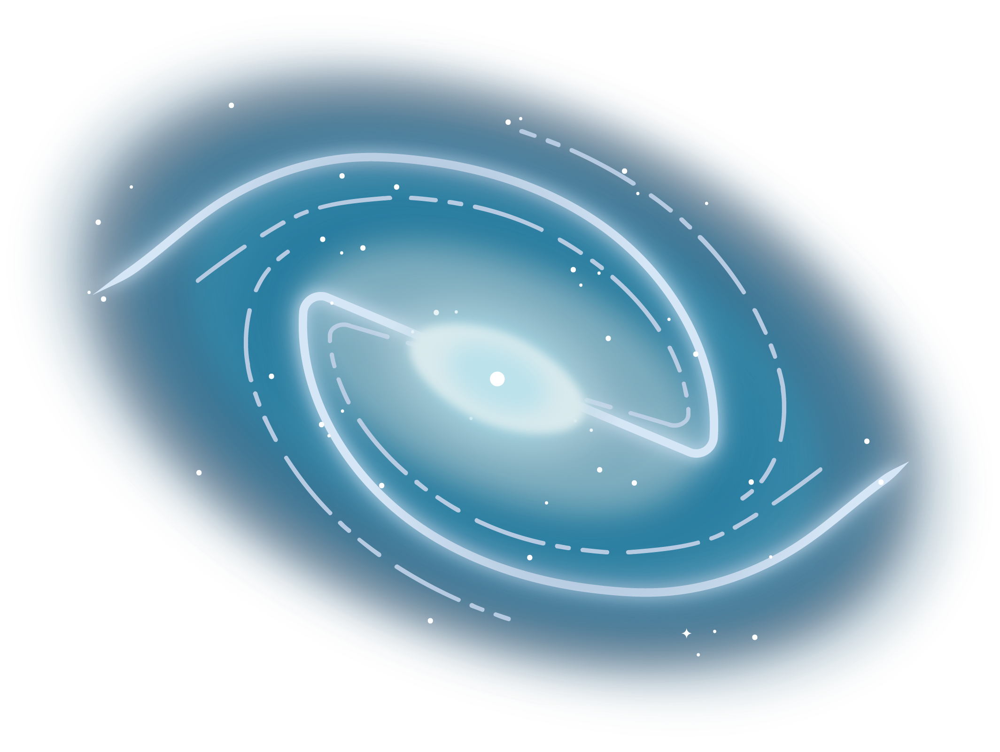

A small atlas of the night
The Midnight
Observatory
A little journey through our universe.
Choose a path to explore ↓
01 / Above the horizon
Night Sky
Begin with the objects that have kept watch over every human story. This is a curated sky, not a live chart.
select an object
02 / Our neighborhood
Solar System
Eight worlds, one star, and an extraordinary amount of empty space. Sizes and distances here are arranged for exploration, not to scale.
The Sun and planets are shown in a conversational arrangement.
03 / Patterns in the dark
Constellations
Connect the stars and the sky becomes a map of memory. Select a pattern to see how to find it.
The hunter
Orion
Look for three evenly spaced stars in a short line: Orion's Belt. From there, the bright red shoulder and blue-white foot make the shape easy to recognize.
A story to carry
In Greek myth, Orion was a giant hunter. The myth is a cultural story, not an explanation for the stars' physical relationship.

04 / A wider address
The Milky Way
Our home in the universe.
From this quiet corner of a spiral galaxy, the night sky is only the view from one small world.
Artistic view · Solar System marker is approximate